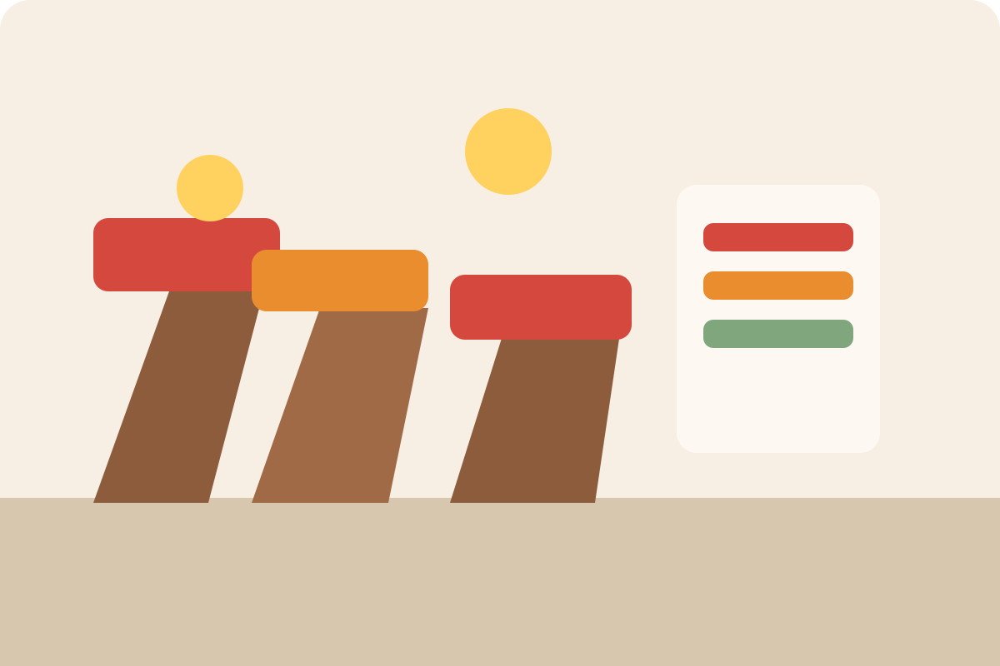
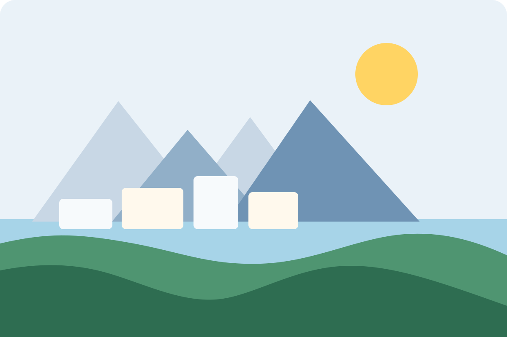

Morning bazaar report tracks prices, produce and the busiest corners before lunch
Compact story cards keep the classic portal rhythm and satisfy the requirement for text plus image blocks.
Mountain weather, city transport, culture listings and community stories stay visible on every screen size.
Hero Message
The lead story anchors the page with a clear headline, short summary and strong image while keeping the original news-portal structure required for the final project.


Compact story cards keep the classic portal rhythm and satisfy the requirement for text plus image blocks.
Each card uses the same HTML and can be restyled entirely through CSS without changing structure.
The card grid stays responsive and keeps all content visible on desktop, tablet and mobile.
This section works as a dedicated media block and adds another required content area to the page layout.
Academic calendars, exam reminders and student deadlines are grouped in a short readable box.
Routes, timing changes and interchange tips are visible without overlapping or off-screen text.
First-time readers can quickly find markets, museums, parks and community services.
Small brands, print makers and students present work in a shared downtown space.
Guides share stories about architecture, murals and how districts changed over time.
Libraries and cafes host late evening sessions with music, poetry and a children corner.